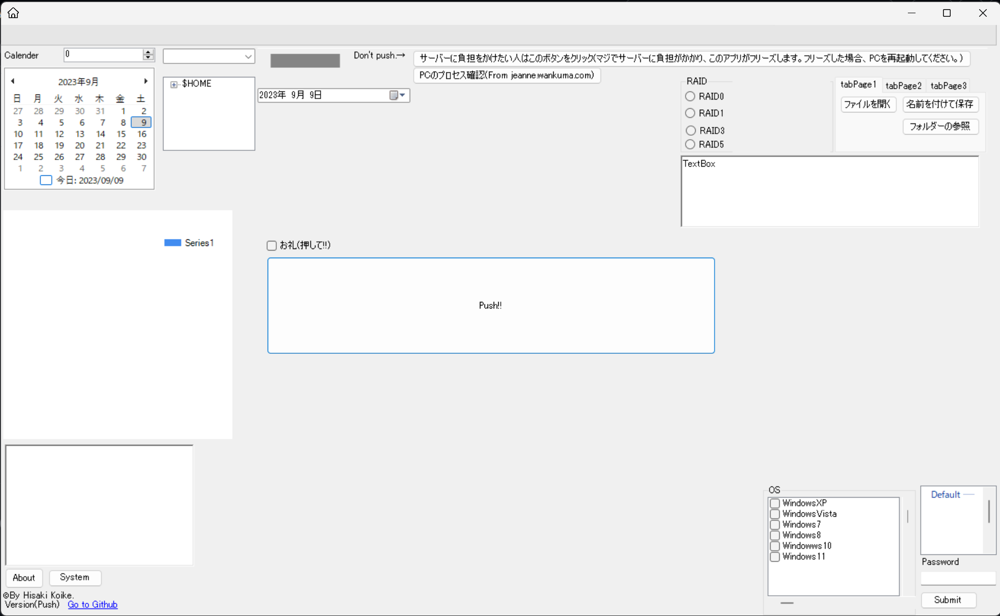

How to use C-FormAPP
How to Use Guide
A detailed guide on how to use C-FormAPP is provided below.
- Step 1: Download from Github. (Download from release is the stable version, build from ZIP is the BETA version.)
If downloaded from the release
- Step 1: Download the exe file.
- Step 2: Run the exe file.
If downloaded directly as a ZIP
- Step 1: Extract the zip file.
- Step 2: Open the file start_app.bat inside.
- ※At this time, the build will start, so please wait until it starts.
Seriously, this app makes no sense.
Screen Image

This is TestVer 0.6 at the time of development.
What to do when an error occurs during bat execution (BETA)
- Step 1: Open YukiFormAPP.sln in VisualStudio.
- Step 2: Enter debug mode and start building.
※If this doesn't solve the problem,
Contact UsPlease contact us at